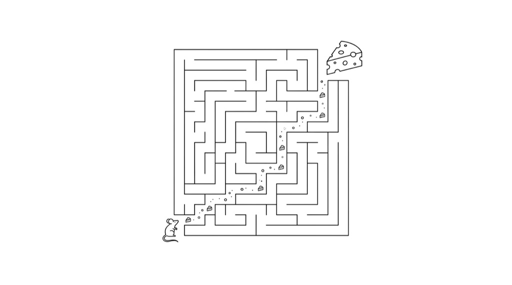

Sahar Yousef 在 UC Berkeley 讀完所有學位，專長是認知神經可塑性，現在主持一間研究生產力的實驗室。這場兩個多小時，她一直回到同一個想法：大腦有它的生物定律，跟地心引力一樣，你不理它，它照樣作用在你身上。手機為什麼放不下、專注為什麼撐不久、休息為什麼越休越累，她都從這裡解釋，再給一套叫「專注衝刺」的做法。後段主持人把話題拉到 AI，她擔心人類正在把思考這件事讓出去。▶ 0:00
Sahar Yousef 是認知神經科學家，主持 Becoming Superhuman Lab，也替企業主管做顧問。她講話很有感染力，數字常常順手就用，有幾個要打折聽。47 秒出自 Gloria Mark 的研究，量的是停在一個畫面多久，跟專注多久不一樣。灰階一天少用一小時、專注衝刺能做到兩倍，都是她實驗室的數字，沒有正式發表；已發表的灰階研究，少掉的是 39 分鐘或 20 分鐘。七週注意力訓練出自她沒有發表的博士論文。時型比例 25%、16% 也是她實驗室的數字。降噪耳機一天別超過三到四小時，找不到依據；夜型人比較有創意，研究還沒有定論。主持人那邊也有兩個：TikTok 那份研究裡，用戶希望它消失的是 33%，對不上 60%；電擊實驗裡會自己按下去的，是男性 67%、女性 25%。切換工作有代價這件事，研究是站得住的。
主持人 Steven Bartlett 一開場就招認，自己照螢幕使用時間算，一天大概用手機十小時。整場他問得很實際，自己也說有些問題問得很自私，一直把話題拉回「那我明天要怎麼做」。上面那一盒是留給回頭看的，照主題排，每條附一句原話，還有它出現在第幾段。下面照影片順序走，開場預告、兩段廣告和主持人宣傳線上工作坊的那段跳過。每段先一行寫主持人問了什麼，接著是 Sahar 的重點和原話，其中七段最後有一題反思。桌機上點段落裡的 ▶ 會跳到那一句，開著跟讀的話，播到這一段結尾就停。
01大腦有它的物理定律▶ 2:21
主持人問你在做的使命是什麼？為什麼跟正在聽的人有關？
她想讓人照著大腦和身體的運作方式工作。她拿物理定律來比：沒有人早上醒來決定不理地心引力，可是我們每天都在無視生物的規律。學校沒教孩子大腦怎麼運作，也沒人教睡眠。她的領域是生產力，她覺得大家把力氣都花在「做什麼」上，年度目標、季目標、交付項目，很少有人問「怎麼做」。
聽眾說不出問題在哪，最常講的是「腦霧」。主持人問聽眾都怎麼形容自己的困擾，她想起一位女性執行長調整完之後講的一句話，到現在還記得。她當時的反應是：那妳的想法之前都去哪了？她覺得現代人很怕跟自己相處，每個空檔都拿來滑手機，腦子沒有機會冒出自己的聲音。
02一間想把人變成超人的實驗室▶ 6:42
主持人問你的背景是什麼？我們為什麼該聽你的？
她整個學術生涯都在 UC Berkeley，專長是認知神經可塑性。意思是大腦一直在變、在適應，既然會變，就有機會變好。她想提高的是注意力廣度、記憶、流體智力這些認知能力，實驗室因此被暱稱成 Becoming Superhuman Lab。主持人問她是不是真能把他變成超人，她說可以，不過得先講好超人是什麼意思。
03玻璃辦公室裡的執行長，和 47 秒▶ 8:15
主持人問你都跟什麼樣的人合作？
她會跟在主管身邊一兩天，看他們怎麼工作。有一次是一家財星前十大科技公司的老闆，坐在樓層正中央一間玻璃辦公室裡，正在準備很重要的董事會簡報。一台電腦，第二個螢幕開著信箱，公私兩支手機正面朝上擺在旁邊，手上戴 Apple Watch，外面人來人往，幕僚長還會進來提醒事情。她說他大概撐了 30 秒。
她丟了一個思想實驗：給你十億美元去治癌症。你會把全世界最聰明的人找來，然後替每個人裝上通知和 Slack、把一天塞滿會議嗎？她說她研究過比這複雜得多的東西，結果現在大部分時間都在教人清掉這些最基本的干擾，她叫它數位衛生。
04車子著火了，先別問怎麼改引擎▶ 12:08
主持人問想把工作做到最好，第一張骨牌是什麼？
第一張是睡眠，一晚至少七小時。常有創辦人一天睡五小時，來問她怎麼再進步百分之一。她的比喻是你把車開去修車廠，車子正在燒，你卻問能不能改裝引擎。睡不夠，認知表現和情緒調節都會掉，她連你的基準線都量不出來。
第二張是你跟科技的關係。她拿出一個手機鎖盒，請主持人把手機關機鎖進去。她說盒子不一定要買，重點是讓大腦這台單工機器真的能專注，因為注意力和記憶分不開。注意力是學習的入口，所有讓你分心的東西，都在削你的記憶。
主持人問萬一有急事怎麼辦，她用郵差來講。很重要的包裹要簽收，郵差會敲門；其他東西就塞進信箱或放門口。手機的通知應該只留給那種得敲門的事。
05預設值是為了讓你多用▶ 17:26
主持人問這些號稱生產力的工具，真的在幫我們提高生產力嗎？
手機、信箱、每個 App 的預設設定，都是為了把你的使用量衝到最高。她說設計這些的人，就是像她這樣的認知與行為神經科學家。就算是 Outlook 這種無聊的工作軟體，公司要續約，拿出來的也是使用數字：大家整天都在用、一直互傳訊息。寄信那聲音效、手機震動的手感，都測過哪一種最讓人舒服。
主持人自己說破了：生產力工具賺的是你花在上面的時間。他說工具公司要跟投資人報告使用量，替你減少分心等於跟自己的生意過不去。她說這就是為什麼她聽到這些產品自稱「生產力軟體」會想笑。她不反科技，團隊散在不同時區，本來就需要溝通工具。她只要每個人對自己說一句話。
06只讓 VIP 敲門▶ 21:43
主持人問像我一天用手機十小時，該怎麼辦？
先設 VIP 通知。伴侶、老闆、老闆的老闆、前十五大客戶，這些人打來或傳訊息就直接穿過過濾，其他一律不響。她的信箱還設了三個關鍵字，第一個是她的名字，因為她的名字少見。被 CC 進一串七個人在聊的信，她要知道進度，可是不需要每一封都響一次。
主持人接著問她見過最專注的人是誰，她說是她先生。她自己預設是說好，先生預設是說不，兩個人一起經營公司，什麼都要辯一輪。他守的是時間和注意力。她模仿他的口吻：沒去那場會，有人會失望，可是久了大家會發現沒有他也沒差，而他因為沒去，做完了一件對整個團隊有用的事。
想一場你最近參加、其實可以不去的會。如果那天沒去，真正會出事的是什麼？
07調大訊號，還是調小雜訊▶ 24:51
主持人問我想跟 Jobs 一樣專注，該從哪裡開始？
主持人先講了一個聽眾常常背給他聽的故事。Kevin O'Leary 跟他說，Steve Jobs 最厲害的地方是分得出訊號和雜訊。Jony Ive 也說過，Jobs 的專注是明明打從骨子裡覺得一個點子很棒，還是說不；Jobs 還會去問 Ive 最近拒絕了什麼。主持人說他想變成那樣。
她說他已經上路了，手機都交出來了。接著她問了一個問題。主持人回答當然是調小雜訊，至少第一步是。接下來整場，她給的建議幾乎都在拿掉東西。
你最近一次說「不」，拒絕的是你本來就不想做的事，還是你其實很想做的事？
08為了活下來而設計的單工機器▶ 27:24
主持人問你說大腦是單工機器，怎麼證明？
整套系統是為了活下來設計的。人類在動物裡算弱，指甲不利、牙齒不尖，打不過掠食者，靠的是想、計畫、專注，才活下來，還統治了世界。大腦皮質大約三分之一拿去處理看和聽，讓我們對環境裡任何一點動靜都很警覺。所以開放式辦公室、玻璃辦公室外人來人往，大腦會一直被拉走。
09又快又便宜的出口▶ 29:04
主持人問我們做到卡住的地方，會自己跑去找分心，這是真的嗎？
大腦是解決問題的機器，碰到不舒服就想解決。壓力、焦慮、困惑、FOMO、孤單、挫折，這些感覺你不想要，大腦也不想要。它有兩條路：正面處理，很累；或者閃開。在現在這個世界，最快的閃法就是拿起手機。她說先承認這很正常，是第一步。
主持人接著提了電擊實驗，還有他自己。受試者原本說願意付錢避免再被電，可是一個人關在房間裡什麼都不做時，很多人一再按按鈕電自己。他說手機沒電時他會有一點焦慮，一天大概拿起手機 200 次。實驗的實際比例寫在上面〈怎麼讀這個人〉。
下一次伸手拿手機之前，先停一秒：剛剛那一刻，你想躲開的是哪一種感覺？
10科技照抄了食品業的三招▶ 32:39
主持人問除了關通知、把手機拿走，還有什麼？
食品業讓人對糖上癮，用的是三招。第一是加刺激：麵包裡也放糖，鹽、油、糖在食物稀少的年代代表大獎，人天生就愛。第二是減摩擦：包好、分好份量，速食隨手拿得到。第三是減飽足：拿掉讓人吃飽的蛋白質和纖維，糖果吃完很快又餓。她相信科技業幾乎原樣抄了這套。
手機的刺激來自飽和的顏色、短影音，還有不知道什麼時候會來的獎勵。她說賭場從來不用中性色。演算法知道你會愛什麼，可是不會一開始就給你，先餵你普普通通的東西，算準你快要離開的那一刻，才丟一個大獎。人對固定的獎勵不太容易上癮，偶爾、隨機的獎勵最讓人上癮，拉霸機就是這樣設計的。
摩擦被拿掉了，飽足也是假的。以前網頁有分頁，Instagram 剛出來時會滑到底，現在是無限滑動，像張著嘴坐在自助餐的輸送帶前面。人需要連結和新東西，社群給的是連結的幻覺，數據顯示用越久越孤單；短影音給的是學到東西的幻覺，看完什麼也記不住。她說既然他們用神經科學讓我們上鉤，我們也能反過來用神經科學把它倒回去。
11灰階、長內容、手機停車場▶ 44:09
主持人問有人測過手機調成灰階以後，使用時間會不會變？
減刺激的第一招，是把手機調成灰階。設定裡就能改，手機看起來像沒電一樣，比較不會一個 App 跳一個 App。她又對所有聽眾喊了一次：你們比預設值更好。主持人問有沒有人測過，她說她實驗室讓一群上班族灰階三週，平均一天少用一小時，一週七小時，夠你去運動了。這個數字沒有正式發表，見上面的查核。
第二招是挑長內容。她沒有要大家戒螢幕。好電影被發現能提升年輕人的同理心，想看電影就換上睡衣、準備爆米花，好好看。可是現在大家看 Netflix 時手上也拿著手機，連拍片的人都假設觀眾在看別的東西。主持人說他前一晚看一部很複雜的老電影，得很用力才跟得上，小時候明明可以就這樣坐著看完。
增加飽足感，就是去真實生活裡把需求填滿。學點新東西，跟真的人相處。她說需求被填飽了，你自然沒那麼想滑短影音。主持人補了 Twitter 前執行長講過的「後悔分鐘數」，還有一份 TikTok 的研究。
最後是加摩擦，替你吃進去的內容做份量控制。手機放進「停車場」，看不到就不會想。她說把手機擺在桌上工作，就像坐在一個剛戒酒的人旁邊，問他這句話。
如果把手機調成灰階一週，你猜哪一個 App 會最先讓你懶得打開？
12專注衝刺：先排時間，再拆清單▶ 55:12
主持人問我要怎麼穩定地把深度工作做好？
她實驗室的答案叫專注衝刺。她說在他們的研究裡，用這個方法工作的人，最多做到原本的兩倍，錯誤也比較少。主持人提到，他的團隊現在因為 AI，反而寫得比以前還多。
第一步，事先把時間排進行事曆。人在預期一件大事的時候，身體會先分泌皮質醇和腎上腺素，就像上台前的緊張，這會讓你更專注。行事曆如果是公開的，同事也看得到你在衝刺，你會少一點「得馬上回覆」的罪惡感。
第二步，定一個產出，拆成標好時間的清單。「我要來弄這份簡報」做不完，就不會有成就感。要寫成「第三張投影片七分鐘，接著寄信跟 John 要第十七張的資料」。人最容易在做完一小步、不知道下一步是什麼的時候分心。
13重要的事是慢多巴胺▶ 1:01:40
主持人問所以 MIT 跟 LIT 差在哪？
每天先問兩件事：今天有幾小時，哪一兩件做完今天就算成功。她叫這些 MIT，最重要的任務，最多三件。她把待辦清單比成冰箱，打開先看哪塊雞肉已經解凍、再不用就壞了。另一種問法是她們研究過的。
主持人說，人總是伸手拿最容易的。她說那些就是 LIT：回一封信、簽一份電子文件、上網買衛生紙，幾分鐘就能劃掉，很有進度感，給的是快多巴胺。真正推動事業和人生的，多半是慢多巴胺的那些事。她沒有叫你別做 LIT，只要先排好一到三件 MIT。
14躺在臨終床上回頭看▶ 1:04:22
主持人問我的待辦清單有 69 件，怎麼知道哪一件最重要？
不知道的話，先退一步，想清楚長期目標。五年後你想在哪裡？她換個說法：你的聖母峰是什麼？知道山在哪，就知道下一步往哪走，不會往反方向去。
她最喜歡的框架，是想像自己躺在臨終床上。假設你活到 110 歲，回頭看，要經歷過、做過什麼，才能笑著走。她自己的答案是想要深深愛過，也相信自己是來服務的，為此放掉了很多別人覺得好玩的事。主持人閉眼想了一下，先注意到房間裡有誰，再想他們怎麼看他，得出三件事：一個大家庭、當孩子的好榜樣、留下證據說明他來過是好的。
她說沒有人在臨終時希望自己多看一點 Netflix。她提到安寧護理師 Bronnie Ware 記下臨終者的遺憾，排第一的是這一句。
想像躺在臨終床上回頭看今天，你做的事裡，哪一件你會希望多花點時間？
15第一聲哭就是在找連結▶ 1:09:44
主持人問跟另一個人聊到很投入、好像意識在一起跳舞的那種感覺，是什麼？
她說愛和連結有一個悖論。新生兒的第一聲哭就是在找連結，人一輩子都在找，卻永遠沒辦法完全得到，因為你進不去另一個人的意識，連自己每一刻都在變。
主持人說，有時候兩個人的意識像在跳探戈。他在節目上聽來賓講三小時童年和創傷，常有很深的連結感，近乎靈性。她說那就是一種心流，前提是兩個人都暫時忘了自己，不再意識到對方怎麼看你。
16把大塊乳酪撒成一路碎屑▶ 1:13:37
主持人問目標拆好了，大事還是很難開始，怎麼辦？
她用迷宮裡的老鼠來比。MIT 是慢多巴胺，像迷宮盡頭一大塊乳酪，老鼠看不到也聞不到，很難有動力走過去。LIT 是就在眼前的一粒碎屑。她的辦法是把那塊乳酪掰碎，撒在整座迷宮裡，讓聖母峰變成一步接一步。

大塊乳酪：最重要的那件事沿路碎屑：拆開的小步她先生去爬吉力馬札羅山，帶回一句話。當地嚮導一路對大家說 pole pole，慢慢來。主持人接著想到 Sir David Brailsford，他要車手專心在踏板上、別去想頒獎台。她再補一個哈佛商業評論的研究：人最喜歡的工作日，是有一點小進展的那一天，她叫它進度原則。
17第三步：把雜訊轉小▶ 1:17:39
主持人問MIT 要怎麼才有 LIT 那種進度感？
拆小就有進度感，接著是第三步：把障礙拿掉。你知道你的聖母峰，也知道下一步，剩下的就是把分心的東西清掉。說到這裡，她又回到開場那組訊號和雜訊。
降噪耳機她很愛，但建議只在專注衝刺時戴。她說一天別超過三到四小時，這個時數找不到依據。音樂挑沒有歌詞的，或聽不懂的語言。她準備了幾份歌單，對應不同的狀態。
18第四步：設計時器▶ 1:19:57
主持人問計時器要倒數，還是往上數？
大部分哺乳類都會被「進度的記號」帶著走。看到時間在跑，就會開始做事。她說人對任何進度感都很有興趣，所以進度條才有用，往上數或倒數都行。
計時器也是拿來對付帕金森定律。主持人說，這其實是在分配時間。她說現在一般人的一天太沒有意圖，被一件件小事拖著走。
19滑手機不算休息▶ 1:24:57
主持人問Jobs 和 Rick Rubin 好像都有一種「無聊練習」，你說的大腦休息是這個嗎？
她說大腦休息的定義很簡單。可是一般人最常用的休息方式是滑 TikTok。她引一篇 2024 年的研究：先量疲勞，讓人工作，再休息幾分鐘，最好的是去大自然，接著是什麼都不做，最差的是滑短影音，因為那只是又塞一批資訊進去。那篇研究其實也顯示，滑社群還是比完全不休息好一點。
她用舉重來比。一組做完，你會放下槓鈴讓肌肉休息，不會馬上去舉另一個重的。大腦也一樣。
她不靠意志力，靠系統。休息時讓手有事做，像是把一整塊乳酪拿出來自己切，或燒一壺水。手忙著，就不會去拿手機。
20先塞滿，再走開▶ 1:30:42
主持人問想要最有創意的點子，還有什麼方法？
要解決一個很複雜的問題，先把資料全部塞進腦子。讀、查、想，然後走開，去做別的事。她引了一句愛因斯坦的話，也自己說這句可能是張冠李戴。
21你餵哪一條，哪一條就變大聲▶ 1:33:10
主持人問這也適用在負面思考和反芻上嗎？
她聽到這題先翻了個白眼。她覺得現代世界把「一直重講、一直反覆想自己的創傷」變成很正常的事。每想一次，那條神經迴路就加深一點，最後會變成你的身分。
她的解法是把注意力轉開。腦子裡有好幾條聲音，你把注意力給哪一條，哪一條就會長大。
最近反覆在你腦子裡播的是哪一件事？你上一次刻意把注意力從它身上移開，是什麼時候？
22你是早上型還是晚上型▶ 1:37:38
主持人問你的工具箱裡為什麼有一個時鐘？
時鐘代表「什麼時候做」的科學。MIT 和 LIT 講的是做什麼，接下來要問的是哪個時段做。人不共用同一條生理時鐘，她實驗室的數字是早上型大約 25%、晚上型 16%，其他人介在中間，多半一天有兩個高峰。最重要的事，排在你自己的高峰時段。
她說她跟主持人都是晚上型，可是世界是照早上型的人在排。主持人說他今天早上才在洛杉磯配合別人開了一場七點的會，回頭看那場的表現很差，那麼重要的會，應該盡量往後排。
23專門讓你不經意去做的那一行▶ 1:46:22
主持人問那些被雜訊打敗、心裡有罪惡感的人，還有什麼我們沒講到、該給他們的？
她先說自己要講點悲觀的。主持人提起她寄給他的一封信，她解釋科技業有一門學問叫策略性自動化，就是讓人在不經意間去做某件事，像刷牙一樣不用想。她自己收過一家科技公司的招募信，信裡寫得很直白。
那份工作開的薪水，是她當時年薪的四倍。她沒去。她說科技用得好可以推動醫學和經濟，可是對數位的依賴，會是人類這個物種要爬的那座山。
24會思考的人正在變少▶ 1:52:24
主持人問你害怕的是什麼？
她說這是她親自坐在 AI 領域領袖的會議裡聽到的。她擔心的走向是：少數人繼續思考、掌控一切，其他人不再被期待要想。她說人類花了好幾代，讓「思考階級」越來越大，例如女性受教育，現在它又在縮小。
主持人說他刻意不讓 AI 替他思考。前一天才有一位同事交了一份用 AI 寫的回饋，他給的意見是這句。
25大腦天生愛走捷徑▶ 1:56:35
主持人問不用想的感覺那麼誘人，要怎麼抵抗？
她說這又是一個生物定律。大腦天生就愛省力，能不想就不想。她引 Daniel Kahneman 的說法來比。
她要大家別羞愧。發現自己被滑手機綁住、懶得思考，都很自然。她的建議是先評估，像做一次血液檢查，看清楚情況有多嚴重，再決定下一步。
26一個 30 秒的多工測驗▶ 2:00:03
主持人問你那個證明多工是迷思的測驗，是怎麼做的？
主持人說自己一直很自豪會切換工作，她就讓他當場做。第一輪先在上面一行寫「我是很會多工的人」，下面一行寫 1 到 20，分開寫花了 31 秒。第二輪改成一個字、一個數字交替寫，到 30 秒時他只寫到數字 8。主持人說每換一行都得重想自己寫到哪。
每換一次，上一件事都會留一點下來。學界叫它注意力殘留，她覺得這個詞聽起來很噁心，改叫注意力行李。解法是做完一件事就收尾，把它在腦子裡關掉。她說現在一般知識工作者，一天花超過兩小時在不同螢幕、不同工作之間跳來跳去。
現在你腦子裡開著幾個沒關的分頁？哪一個今天就能把它關掉？
27磚牆其實是門▶ 2:06:03
主持人問上一位來賓留了一個問題給你：觀眾要怎麼變得更幸運？
她說先讓腦子知道你要找什麼。你知道自己的聖母峰在哪，大腦就會開始在環境裡替你找相關的東西，她說這也是在把訊號調大。
主持人問這是不是顯化，她拿他當例子。如果他每天醒來都想著「要請 Obama 上節目」，大腦就會開始在環境裡找證據，說不定哪天就隨口遇到 Obama 的前幕僚長。最後她說科學應該為人服務，她的實驗室在 mmminstitute.org 放了免費的評估。
—庫裡跟這篇對得上的
她講的快多巴胺和慢多巴胺，在 專注不是靠紀律，是保養好你的多巴胺 裡有更細的機制。要讓大腦重新愛上難的事，重新接線大腦，愛上紀律 可以並排看。睡眠那張第一骨牌，腦健康的六個科學修復 講得更完整。最後一段「先讓腦子知道要找什麼」，在 大腦重塑與顯化的神經科學 裡有神經科學的版本。